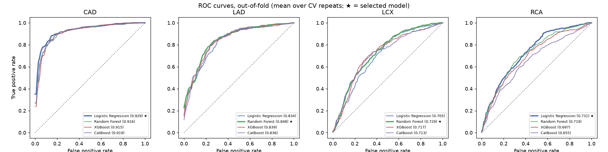
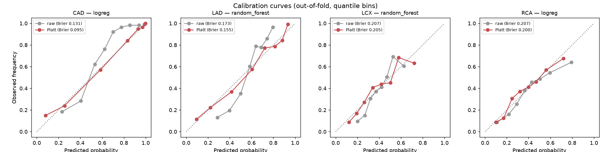
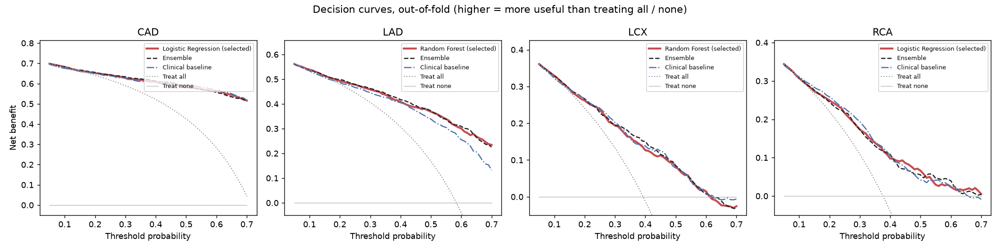
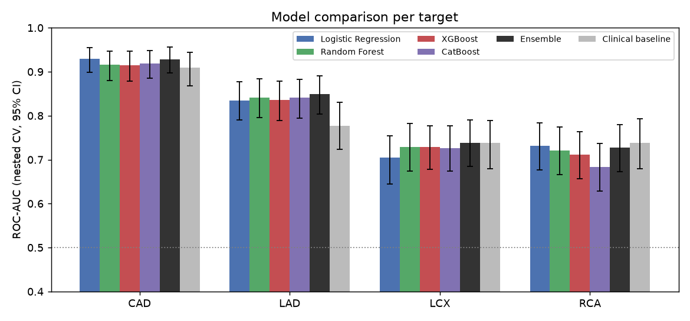

Multimodal AI Hackathon 2026 · Track A: Cardiovascular Risk Visualization & Prediction
Narrowing (stenosis) of the arteries that feed the heart muscle. Three main vessels:
Extension of the Z-Alizadeh Sani dataset (UCI) · 303 patients · 54 clinical features: demographics, history, examination, ECG, labs, echo
Raw file is read-only. features.yaml defines every feature: type, unit, normal range, display group.
scikit-learn, XGBoost, CatBoost. Nested CV, calibration, thresholds, exact SHAP. One command.
/schema /predict /explain /patients/sample. Pydantic input model generated from the config.
React Three Fiber 3D heart, form built from /schema, Recharts SHAP waterfall.
One vessel ID registry used by the model targets, the API and the 3D anatomy, so LAD, LCX and RCA in 3D always match the model outputs. Tests fail if they ever drift apart.
LAD, LCX, RCA and Cath are never model inputs. An assertion in the pipeline and pytest checks on the training matrix and saved models enforce it.
Repeated stratified 5-fold × 3. Tuning in an inner 3-fold loop. All imputation, encoding and scaling refit inside every fold.
Logistic regression, random forest, XGBoost, CatBoost. Best CV ROC-AUC wins. Vessels: independent models beat a classifier chain.
Platt scaling lowered the Brier score for all four targets. Thresholds aim for ≥ 90% sensitivity (CAD) and ≥ 80% (vessels). 1,000-sample bootstrap 95% CIs.
| Target | Selected model | ROC-AUC | Recall | Specificity | F1 | Brier |
|---|---|---|---|---|---|---|
| Overall CAD | Logistic regression | 0.9290.90–0.96 | 0.889 | 0.816 | 0.906 | 0.095 |
| LAD | Random forest | 0.8420.80–0.88 | 0.798 | 0.728 | 0.801 | 0.157 |
| LCX | Random forest | 0.7290.67–0.78 | 0.773 | 0.560 | 0.630 | 0.204 |
| RCA | Logistic regression | 0.7310.68–0.78 | 0.769 | 0.563 | 0.617 | 0.200 |




+0.064 AUC [+0.031, +0.102]. Wall-motion abnormality and ejection fraction reflect LAD's large territory.
+0.020 AUC, borderline. Chest-pain type and risk factors carry most of the signal.
Routine data holds little vessel-specific signal for them. We report this openly.
Sculpted heart (CC BY-NC-SA 4.0) with the coronary tree split into separate LAD, LCX and RCA meshes. Torso cropped from a CC BY 4.0 body base.
Decimated from 2.7 million to about 125 thousand triangles and Meshopt-compressed: the heart is 438 KB.
Renders on demand, adaptive pixel ratio, no shadows or post-processing. A procedural heart is the automatic fallback.
Each artery takes one colour from its predicted probability (green → amber → red). The model predicts per-vessel status, so nothing in the view implies where a lesion sits inside a vessel. Region RWMA is used as a clinical feature, never as a coordinate.
python -m cardioscope_ml.train rebuilds every model, metric and figure. Fixed seed 42: two runs give identical results.
pytest for data, leakage and SHAP additivity; API tests for every endpoint; Vitest for the 3D anatomy, colour scale and vessel correspondence.
TreeSHAP for the tree models and exact linear SHAP for logistic regression, in calibrated log-odds. Base value plus contributions equals the prediction.
features.yaml, targets.yaml, models.yaml, vessels.json, anatomy.json: the form, API, models and 3D scene are generated from them.
303 patients from a single centre, no external validation. Wide intervals for LCX and RCA.
Per-vessel stenosis status, not lesion location or severity within a vessel.
Decision support and education only. Not a substitute for coronary angiography.